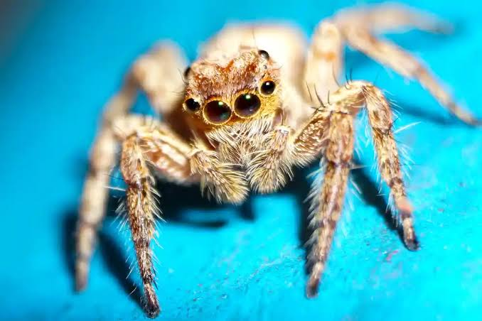

Leafy seadragon
Found off the southern coast of Australia, this fish blends in with underwater plants.
Choose a biome to meet some of its extraordinary animals.
Found off the southern coast of Australia, this fish blends in with underwater plants.

This nocturnal lemur lives in Madagascar’s forests and searches trees for insects.

The Himalayan jumping spider (Euophrys omnisuperstes) is a very small spider: Females: About 5 mm (roughly 3/16 inch) in total body length. Males: Slightly smaller, about 4 mm (roughly 5/32 inch) or less in total body length. Despite their tiny size, they are known for living at extreme elevations of up to 6,700 meters (22,000 feet) in the Himalayas, including around Mount Everest.